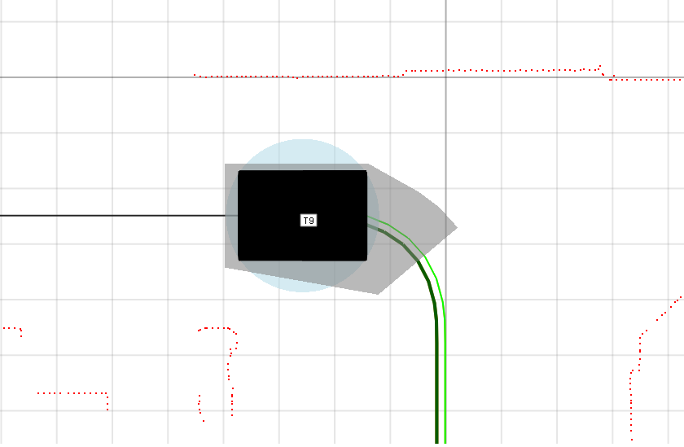
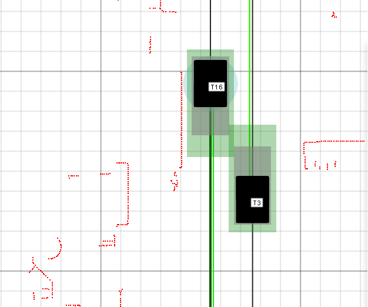
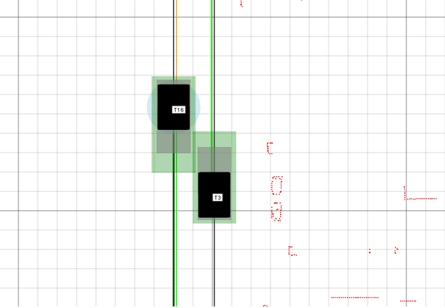

Virtual Dynamic Safety Bounds
This document contains information on Virtual Dynamic Safety Bounds in Navithor.
Updated 08.12.2022
Version History
| Version | Date | Author | Change |
|---|---|---|---|
| 1.0 | 27.04.2020 | Joni Sundholm | First version of document for Navithor version 2.18.0.0 |
| 1.1 | 04.12.2020 | Joni Sundholm | Document updated. Reflecting Navithor version 2.19.0.0 and above. New mode 'DynamicBounds' available. |
| 1.2 | 11.06.2021 | Aleksi Ålander | Renamed title |
| 1.3 | 08.12.2022 | Evgenii Kuzminskii | Reflected the changes in 'DynamicBounds' mode |
Description
Navithor Fleet Control System controls AGVs in a safe way by not allocating routes for AGVs if the routes are crossing or overlapping in a way that only one AGV could run its route at a time. As a further safety feature Navithor calculates dynamic safety- and speed bounds online. These bounds are used to prevent collisions and also to limit speeds when two AGVs are moving very close to each other. The feature uses two separate bounds, Safety bounds and Speed bounds, to create a polygon around the AGV that should not collide with other AGV's polygon.
Traffic Controller performs cross-checks of safety bound violations during each process cycle (5Hz). Only AGV's that report their position near each other are cross checked. AGV's that are nearer each other than system parameter TrafficController_MAX_TRACKING_DIST_BOUND defines are checked. Making the parameter value as 0 will disable the feature.
This feature is available in Navithor Fleet Control System only and within Navithor Server. AGV (Navitrol) does not have the information of the virtual bounds and thus it cannot be used to check agains live laser data.
Parameter TrafficController_Safetybounds_calculation_mode defines the mode how Safety bounds are calculated. Currently there are 3 modes available:
| Mode | Description |
|---|---|
| Default | Safety bounds and Speed bounds are calculated along driven route. Driving speed affects the size of the polygon towards the direction of route and direction of speed. |
| StaticBox | Safety bounds are static around the AGV. Moving AGV has same safety area as stopped one. StaticBox is not recommended unless instructed by Navitec. |
| DynamicBounds | Safety bounds and Speed bounds increase to the direction of movement. Driving speed affects the size of the polygon towards the direction of speed. Route information is used to forecast direction changes. This mode is recommended for omni-type AGVs. |
Visualization
Safety - and Speed bounds are visualized in Navithor Client only. Parameter ServiceInterface_SendSafetyAreaBoundsToClient changes viualization on/off. By default visualization is off. In case Navithor Clients are used in WIFI network with poor data transfer rates then this is one way to limit data from Navithor Server to Clients. This parameter affects only visualization so having it disabled does not affect the feature itself.
Safety Bounds
Gray polygon around AGV defines safe bounds that should not be violated by another AGV's safety bounds. Violation of safety bounds between two AGVs causes abort-signal to be commanded to the AGV's involved. Violation check is done between safety bounds of two AGVs that are near each other. AGV's position confidence has affect on the size of the safety polygon. All parameters that affect the size are considered to be values when position confidence is 100%. When confidence goes down and the AGV is moving (in AUTO-state) the safety bounds will increase in size.

Figure: Virtual Safety bounds of AGV
Following parameters affect the size of the safety bounds:
| Parameter | Description |
|---|---|
| Machine_SAFE_DIST_FRONT_REAR_STATIONARY_BOUND | Distance from AGV front or rear to the end of the safety polygon when AGV is stationary. 'DynamicBounds' mode uses separate machine type parameters for calculation of rear (OBS_SAFE_REAR) and front (OBS_SAFE_FRONT) safety bounds instead. |
| TrafficController_SAFE_SIDE_ADD_DIST_BOUND | Distance from AGV left and right sides to the edge of the safety polygon. 'DynamicBounds' mode uses machine type parameter for calculation of side (OBS_SAFE_SIDE) safety bounds instead. |
| TrafficController_SAFE_STOP_TIME_SECONDS | Time parameter that is used to calculate expanding safety distance to the direction of route and speed. Higher values mean longer safety bounds. |
| TrafficController_SPEED_WHEN_MAX_SAFETY_AREA_APPLIED | The abs speed that results the maximum safety distance to the direction of route and speed. The smaller the value the faster the bounds will grow when speed increases. |
| TrafficController_SAFE_DISTANCE_BOUND | Added to front and rear safety distance in StaticBox-mode. |
Speed Warning Bounds
Green polygon around AGV defines virtual speed warning bounds. Speed warning zones are checked against safety bounds of another AGV within TrafficController_MAX_TRACKING_DIST_BOUND distance. Violation of speed bounds causes speed reductions in steps. First reduction is to 50% speed and second to 25% of max speed on current route. AGV is stopped if bound violations still occur. Speed warning bounds expand when speed increases if default calculation mode is used. Thus all violations that causes speed reductions also make bounds smaller thus further reductions may be avoided.
Speed Warning Zones can be utilized to slow down AGVs that are confronting each others on an aisle. Confrontation with high speed may cause dust issues to laser scanners and extra stops as a result. Using sideways expanding speed warning zones the AGVs are automatically slowed down on tight aisle. AGV moving slower has smaller Speed bounds to the sides and thus two AGVs can pass each other without need of stopping. Once the AGVs have passed each other the speeds are set to maximum again.

Figure: Speed Warning Bounds crossing - speeds will be reduced

Figure: Speed Warning Bounds are not violating safety bounds - no action
Following additional parameters affect the size of the speed warning bounds:
| Parameter | Description |
|---|---|
| Machine_SAFE_DIST_SIDE_BOUND | Distance from AGV left and right sides to the edge of the speed warning polygon. Only 'Default' mode uses this parameter. |
| TrafficController_SAFE_DIST_SIDE_SPEEDGAIN_METERS | Distance added based on AGVs speed. This value is added when AGVs speed is as high as TrafficController_SPEED_WHEN_MAX_SAFETY_AREA_APPLIED parameter defines. |
| TrafficController_SPEED_REDUCE_BOUND_SECONDS | Time parameter that is used to calculate safety distance from AGVs speed to get needed distance to the direction of route and speed. This parameter is used when AGV's speed has not been reduced. Higher parameter values yield bigger bounds towards the direction of route and speed. |
| TrafficController_SLOW_SPEED_BOUND_SECONDS | Time parameter as above but used when speed warning zones have been violated already. |
AGVs with bigger resources than AGV frame
Navithor supports resources carried by AGVs that are bigger than AGV since version 2.18.0.0. The safety bounds calculation mode is recommended to be 'DynamicBounds' but 'Default'-mode has been updated in version 2.19.0.0 to handle bigger resources correctly thus it can be used also.
Additional Parameters
Following parameters affect this feature also:
| Parameter | Description |
|---|---|
| TrafficController_TURNING_SAFETY_GAIN | Additional side safety can be added automatically according to turning rate of AGV. |
| TrafficController_SAFETY_BOUND_POLY_P_GAIN1 | Paramter to tune concave polygon calculation in case polygons are not calculated correctly. Default value should be valid for normal size AGVs. Tuning is only needed if the safety polygons are not covering the AGV in all situations. Parameter change take immediate effect thus valid value can be found with visual feedback. |
| TrafficController_SAFETY_BOUND_POLY_P_INTERVAL_GAIN2 | Same use as above. Used to define maximum polygon edge lenght. Default value should be valid for normal size AGVs. Parameter change take immediate effect thus valid value can be found with visual feedback. |